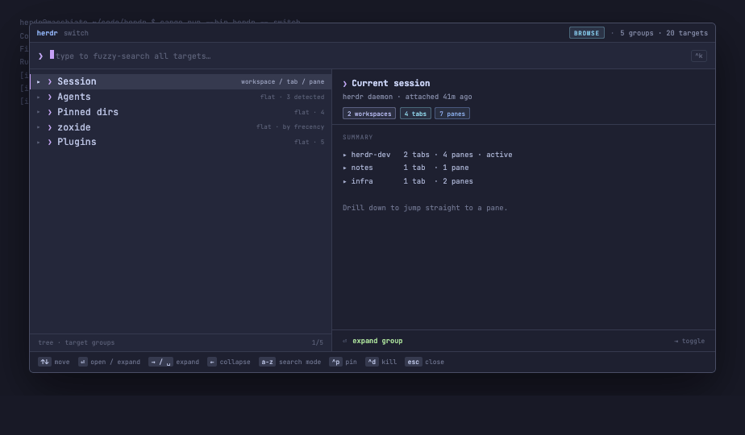
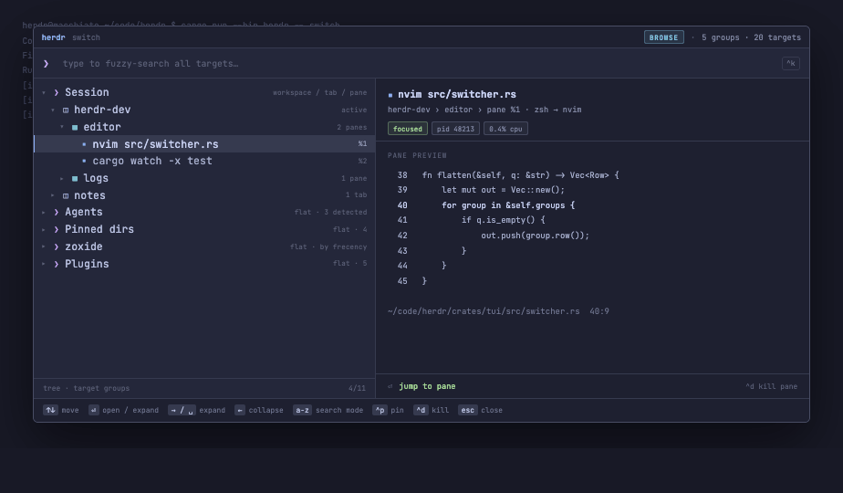
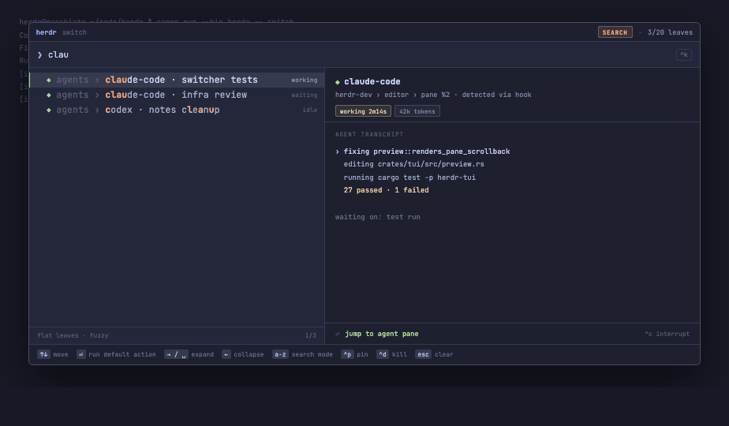
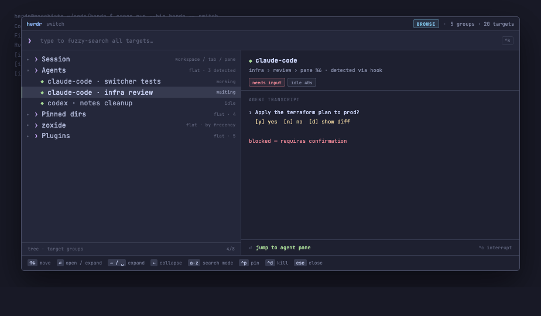
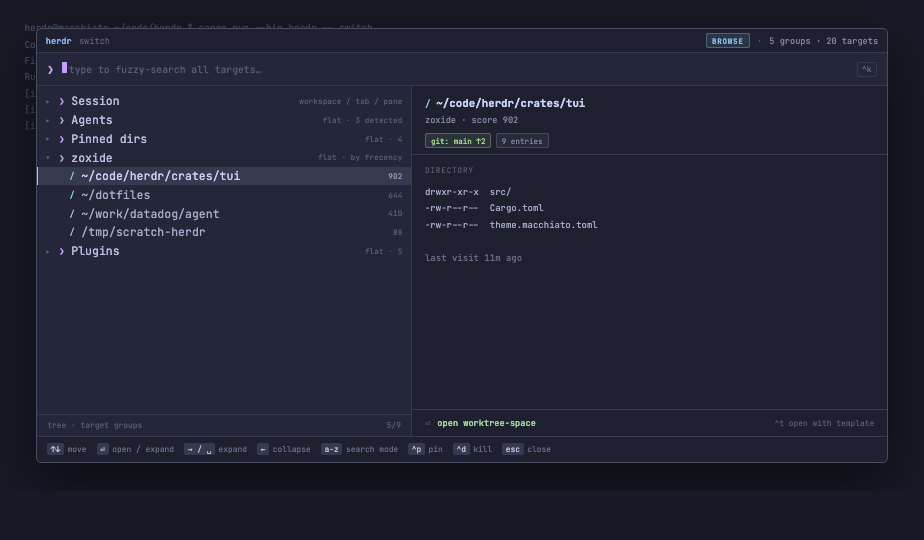
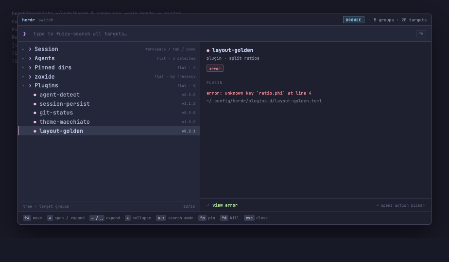
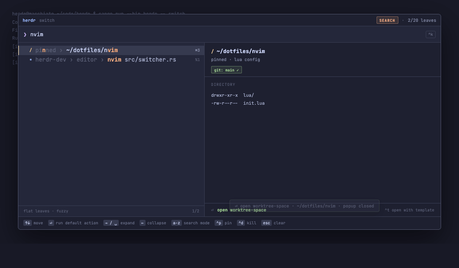

A popup target switcher for the herdr terminal multiplexer: one keystroke away, two modes, five target groups, live preview. Catppuccin Macchiato.
Audience: an implementing agent (Claude Code or equivalent). Reference prototype: Herdr Switcher.dc.html — behaviour there is normative where this document and the prototype agree; this document wins where they differ.
The switcher answers one question — where do I want to be? — for every kind of "place" herdr knows about: a live pane in the current session, an agent that is waiting on you, a directory you visit often, a plugin you want to poke. It is a modal popup over the terminal, not a persistent panel. It opens, you aim, you hit Enter, it closes and herdr has moved you.
Two hard design constraints drive everything below. First, a single keystroke must be enough to change interaction model: browsing structure and searching text are different tasks, so typing any printable character flips the whole left pane from a tree into a ranked flat list. Second, the preview pane never changes shape — it is always the answer to "what is the thing under the cursor", in both modes, for every node kind. That invariant is what makes the mode switch feel free rather than disorienting.
The popup is a floating, bordered, rounded rectangle centred over the dimmed host terminal. It has three horizontal bands: search bar, body (split), footer — the popup window itself renders the border and the pane title, so no title bar is drawn inside. All measurements are given in character cells for a TUI implementation, with the prototype's pixel values in parentheses.
| BAND | HEIGHT | CONTENT |
|---|---|---|
| Search bar | 1 row (46px) | prompt ❯, query, block caret, placeholder |
| Body | flex (486px) | list 44% · vertical rule · preview 56% |
| Footer | 1 row (30px) | global keymap hints |
Target size is 80% of the host terminal, clamped to 100×34 cells (prototype: 1180px wide). Below 60 cells wide, drop the preview pane and show it on demand (§7.4). Below 20 rows, drop the footer hints to a single ? affordance. The list pane owns a one-row status strip at its bottom edge: scope on the left (tree · target groups / flat leaves · fuzzy), cursor position on the right (6/12).

Mode is derived, never toggled: mode = if query.is_empty() { Browse } else { Search }. There is no mode key, and no state that survives the transition except the query itself. Consequences the implementation must respect:
A single-selection tree. Rows are indented 2 cells (14px) per depth level, prefixed by a twisty (▾ open, ▸ closed, blank for leaves) and a kind glyph. Both branches and leaves are selectable — the cursor moves through the visible flattening of the tree, never into a collapsed subtree.

The tree is replaced by the fully rolled-out set of leaves only — every pane, agent, directory and plugin in one list, no branches, no indentation. Each row shows its own path as a breadcrumb prefix, dimmed, so a leaf is unambiguous without its tree: herdr-dev › editor › nvim src/switcher.rs. The query fuzzy-filters and re-ranks this list (§6). The preview pane behaves identically to browse mode.

Five groups at root, in this fixed order. The order is deliberate: the two groups whose contents are live and volatile (your session, your agents) come first because they are the reason you opened the popup mid-task; the three stable groups follow, ordered by how explicitly you chose them.
| # | GROUP | SHAPE | LEAF KIND | SORT |
|---|---|---|---|---|
| 1 | Session | 3-level tree: workspace / tab / pane | pane | session order, active workspace first |
| 2 | Agents | flat list | agent | waiting → working → idle, then recency |
| 3 | Pinned dirs | flat list | dir | config file order (slot ⌘1–⌘9) |
| 4 | zoxide | flat list | zox | frecency score, descending |
| 5 | Plugins | flat list | plugin | name, errors surfaced in group meta |
Groups are collapsed by default except Session, which opens to its active workspace and that workspace's active tab. Restoring the previous expansion set across invocations is optional; if implemented, expire it after 10 minutes so a stale tree never greets you.

Two rules make the rest of the UI fall out for free. Leaf-ness is structural (children.is_empty()), so search mode is one recursive walk with no per-group special-casing. Crumbs are precomputed at tree build time, so search-mode rows need no upward traversal during keystroke handling.
One provider per group, each producing a subtree and resolving previews for its own nodes. Providers are cheap to enumerate and lazy to preview.
| PROVIDER | SOURCE | REFRESH |
|---|---|---|
| session | herdr daemon IPC: workspace/tab/pane graph, pane pids, cwd, last command, scrollback tail | on open + on daemon event |
| agents | agent-detect plugin: agent.start/agent.stop hooks, else process-tree heuristic | on open + on hook fire |
| pinned | ~/.config/herdr/targets.toml | on file mtime change |
| zoxide | zoxide query --list --score, top 50, existing paths only | on open (cache 30s) |
| plugins | plugin registry: name, version, enabled, load error, declared actions | on open |
A provider that fails must not break the popup: its group row stays, its meta becomes unavailable in red, and its preview shows the error text. Agents and Session must reflect reality at the moment of opening — a jump to a dead pane is the one failure users will not forgive.

Build once per invocation (not per keystroke): a Vec<Leaf> from a depth-first walk of all five subtrees, in group order. Each leaf's match text is crumbs + " › " + label — crumbs are searchable, which is what lets editor nvim and notes zsh work as queries. Store the crumb prefix length alongside, so rendering knows which characters to dim.
Case-insensitive greedy subsequence match, left to right; a leaf whose match text does not contain the query as a subsequence is dropped. Return the matched character indices — they are needed for highlighting, and their distribution is the score.
Sort descending by score; ties break by the haystack's original order, which means group order, which means live things before stored things. Do not use a smarter algorithm than this without also making it deterministic — users learn the ranking, and a ranking that reshuffles is worse than one that is merely imperfect.
Applied as a flat additive constant so it nudges rather than dominates: agents needing input +6, live panes +4, pinned dirs +3, other agents +2, zoxide +0, plugins −2. Plugins are last because they are the only group you rarely reach for mid-flow.
Render the match text as runs, not per character: coalesce adjacent characters that share a colour into one span/attribute run. Matched characters are peach #f5a97f and bold, in both the crumb prefix and the label. Unmatched crumb characters use surface2 #5b6078; unmatched label characters use subtext0 #a5adcb, or text #cad3f5 on the selected row.
One shape for every node kind, in four stacked regions. It is the only place in the popup where content is allowed to be dense.
| KIND | BODY | CHIPS |
|---|---|---|
| pane | last N lines of live scrollback, ANSI colour preserved; footer line = cwd + cursor position | focused/running, pid, cpu |
| workspace / tab | child inventory, plus an ASCII split diagram for a tab's layout | active/detached, layout name |
| dir / zox | first ~8 entries (dirs first), then last-visit recency and hit count | git branch + dirty, entry count |
| agent | tail of the agent transcript; if blocked, the pending question and its options verbatim | status + duration, token count |
| plugin | one-line description, declared hooks, matched objects; load error with file and line if failing | enabled/error, version |
| group | aggregate roster of its children + one line explaining the group's role | counts, error counts |
7.4 Behaviour. The preview is read-only and never scrolls — it is clipped at the pane's height, because a preview you have to navigate has stopped being a preview. Resolution is debounced 60ms after the cursor settles; while a slow provider resolves, keep the previous preview visible and dim it rather than flashing empty. On narrow terminals the pane is hidden and bound to a toggle key, with the list widening to full width.

| KEY | BROWSE | SEARCH |
|---|---|---|
| ↓ / ^n | next visible row (wraps) | next match (wraps) |
| ↑ / ^p | previous visible row (wraps) | previous match (wraps) |
| → / Space / Tab | expand node; if already open, step to first child | → / Tab inert; Space types a space |
| ← | collapse node; if already closed, jump to parent | inert |
| ⏎ | branch → toggle; leaf → default action, close | default action, close |
| a–z 0–9 … | enter search mode with that character | append to query, re-rank, cursor → 0 |
| ⌫ | — | delete last char; empty query → browse mode |
| Esc | close popup, no action | clear query → browse mode |
| ^p | pin the selected directory (or the selected pane's cwd) into Pinned dirs; toast, stay open | |
| ^d | kill the selected pane / tab / workspace; confirm inline in the footer; stay open | |
| ^t | on a dir / zoxide entry: open the workspace-template picker (§8.4) | |
| ^r ^c ^x | context alternates (restart command, interrupt agent, detach agent), named per item in the preview footer (§8.2) | |
Footer hints are mode-aware: ⏎ open / expand and esc close in browse mode become ⏎ run default action and esc clear in search mode. Nothing else in the footer changes between modes.
| KIND | ⏎ DEFAULT | ALTERNATE |
|---|---|---|
| pane | jump to the pane (switch workspace + tab + focus pane) | ^d kill pane · ^r restart command |
| agent | jump to the pane the agent runs in — identical to a pane jump | ^c interrupt · ^x detach |
| workspace / tab | switch to it, keeping its active pane | ^p pin · ^d kill |
| dir / zox | always open a new workspace at that path — a worktree-space if the path is inside a git repository, a plain workspace otherwise. The current workspace is never reused. | ^t open with template (§8.4) · ^p pin |
| plugin | open the plugin's action picker (§8.3), default action preselected; "view error" if the plugin failed to load | — |
The default action is always named in the preview footer before you commit to it — Enter is never a guess. Executing it closes the popup and shows a one-line toast in the host terminal naming what happened; non-destructive side actions (pin) keep the popup open and toast in place. There is no enable/disable toggle in the switcher — plugin lifecycle belongs to config, not to a jump UI.
Enter on a plugin does not execute anything. It replaces the list pane with a small selector listing every action that plugin declares, in declaration order, with the plugin's default action preselected. Same row grammar as the main list, so the muscle memory carries: ↑↓ move, ⏎ runs the highlighted action and closes the popup, Esc returns to the switcher with the plugin still selected. The preview pane switches to the highlighted action's own description and, where the plugin provides one, a dry-run summary of what it will touch.
A plugin declaring exactly one action still shows the picker — it stays predictable, and one row is cheap. A plugin declaring none is not selectable: its default action becomes "view error" or "no actions declared", and Enter is inert.
^t on a directory or zoxide entry opens the same selector shape, listing the configured workspace templates — a tmuxinator-style declaration of tabs, panes, splits and startup commands — with one preselected: the template whose match pattern fits the path, else the configured default. Enter opens a new workspace (or worktree-space) at that path built from the highlighted template; Esc returns.
The feature is optional: with no templates.toml, ^t is unbound and the preview footer omits the hint. Plain Enter never consults templates beyond the default one — the picker is the only place a template is chosen explicitly.

Palette is fixed; the mapping below is the contract. Never introduce a colour outside the palette, and never use colour as the only carrier of meaning — every coloured state also has a word in the meta column or a chip label.
Kind glyph + colour: workspace ◫ lavender #b7bdf8, tab ▤ sky #91d7e3, pane ▪ blue #8aadf4, dir / yellow #eed49f, zoxide / teal #8bd5ca, plugin ⬢ pink #f5bde6, agent ◆ green #a6da95, group ❯ mauve #c6a0f6. Two directory kinds share a glyph and differ only in colour, because they differ only in provenance.
Selected row: surface0 background, a 2px left bar in the row's kind colour, label promoted to text. Nothing else marks selection — no bold, no inverse video, no arrow — so the eye tracks one moving band. Fall back to reverse video only on terminals without truecolour.
One row is one terminal line, laid out as: [indent][twisty 1][glyph 1][gap][label — flexible, truncated][gap 2][meta — right-aligned]. The label truncates with an ellipsis and never wraps; the meta column never truncates and always keeps at least two cells of clearance from the label. When a truncated label would hide a match hit in search mode, truncate from the left of the crumb prefix instead, so the hit stays visible.